NOS PARTENAIRES
Clepsydre bénéficie de plus de 10 ans d'expérience dans l'événementiel. En ce laps de temps notre association a pu accomplir de grands projets grâce à notre motivation et professionnalisme. De ces projets résulte une palette diverse et variée de collaborateurs qui nous font confiance. Parmi ces partenaires, vous pouvez trouver le Club Top 20® qui regroupe les plus grandes entreprises de la région Aix-Marseille Provence ou encore la Caisse d'Epargne Provence Alpes Corse® et le Crédit Agricole Provence Côte d'Azur®.
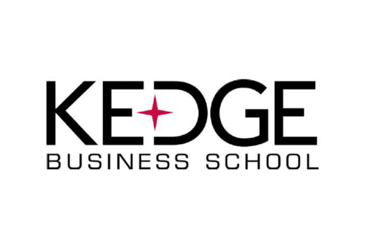 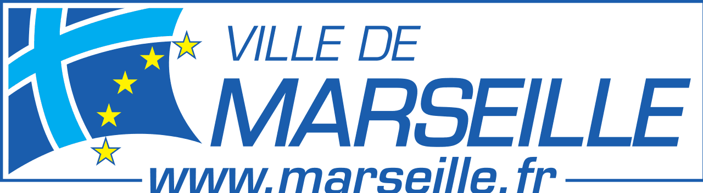 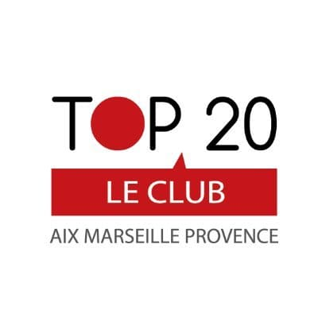 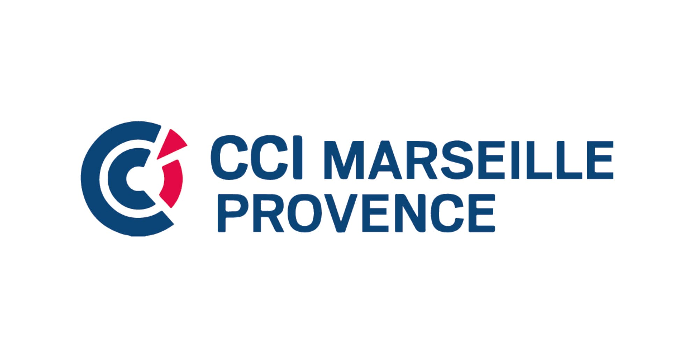 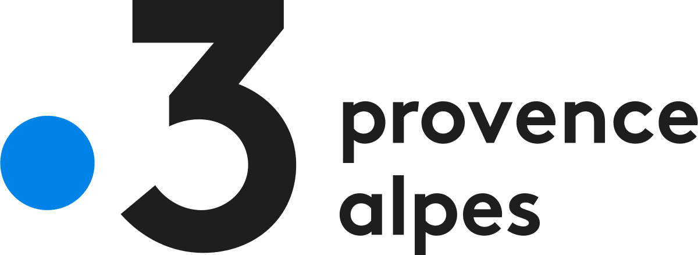 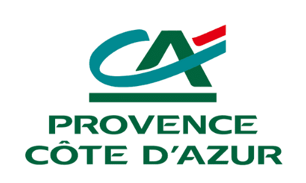 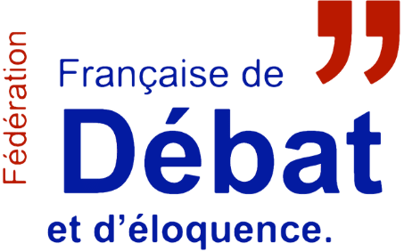 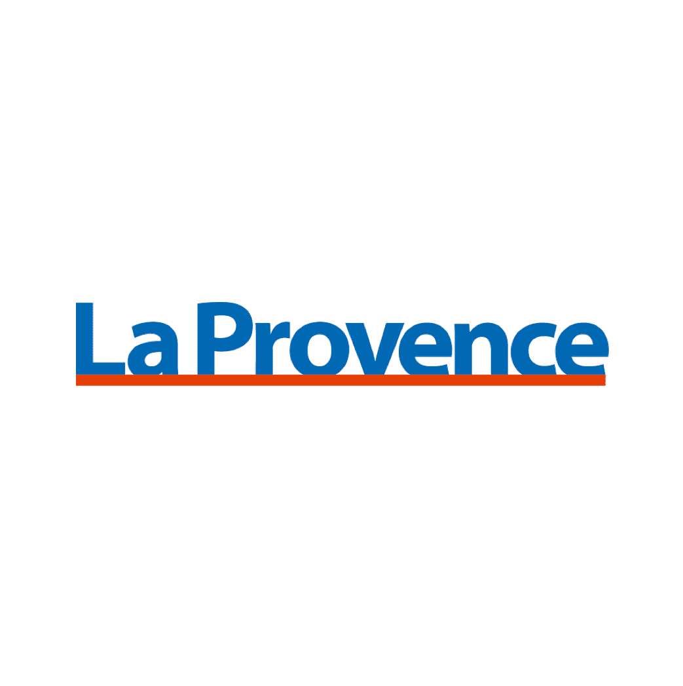
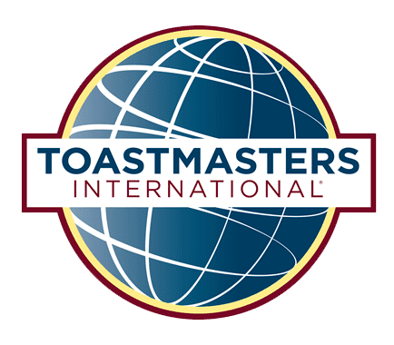
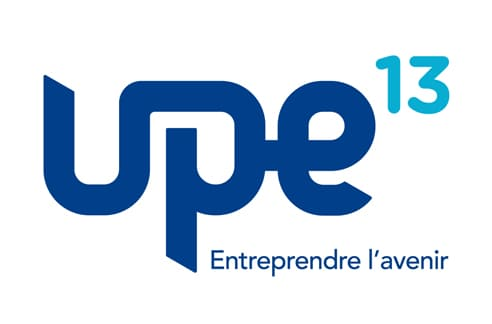
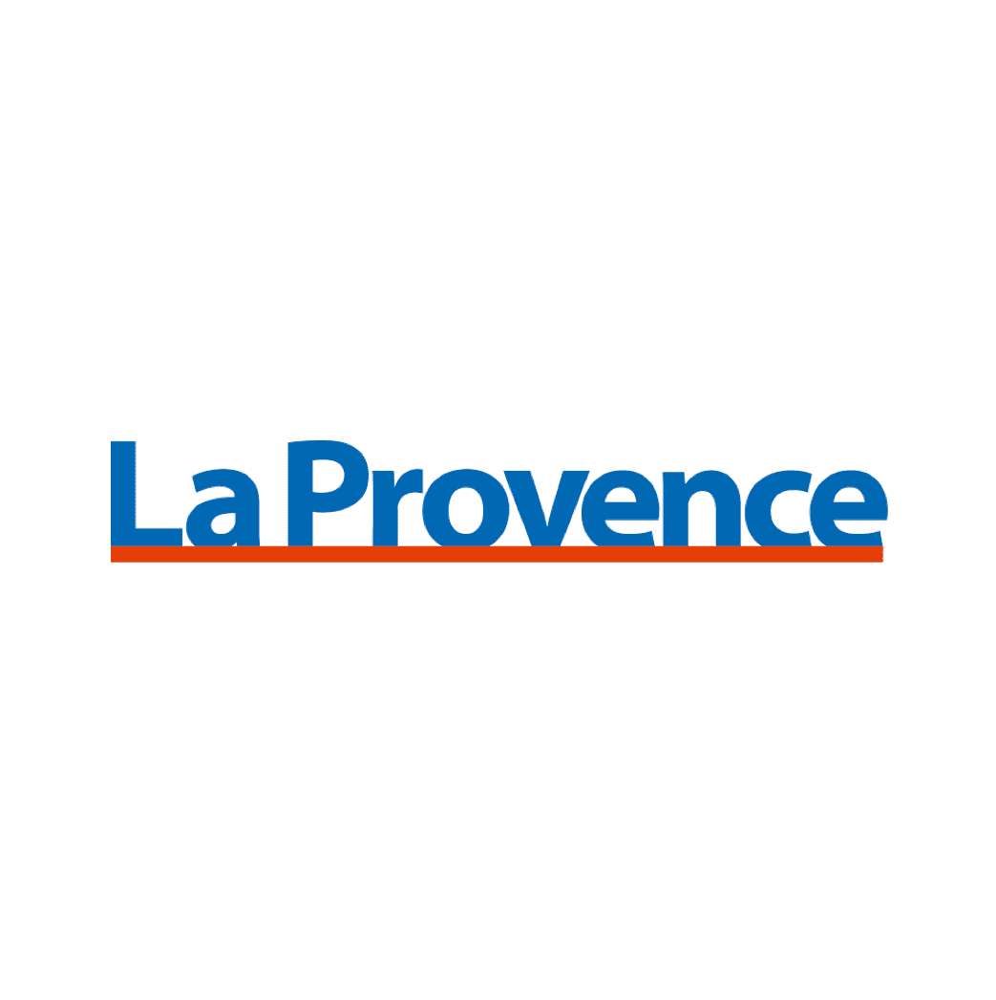
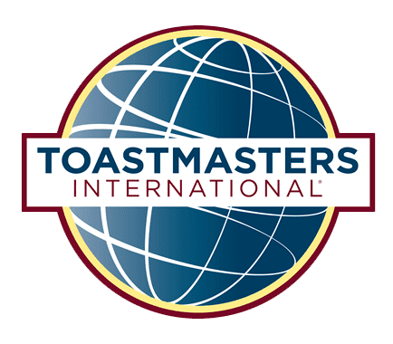
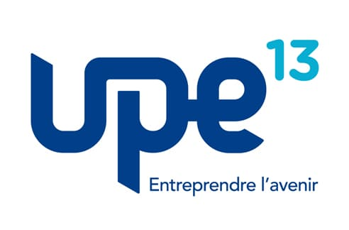